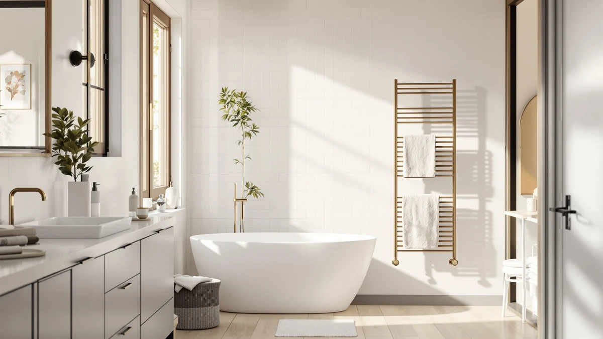

Poloma Freestanding Heated Towel Racks Review (2026): Worth It?


Quick Answer
In this Poloma Freestanding Heated Towel Racks review, the Poloma comes out ahead for buyers who want a stainless steel rack with no installation, at $135.98. The VEVOR, Live Fine and ForPro models below are worth a look if an enclosed cabinet, a premium build or a lower price matters more to you than Poloma's freestanding design.
Our pick: Poloma Freestanding Heated Towel Racks, $135.98 Check Price on Amazon
Bottom line: our top pick is the Poloma Freestanding Heated Towel Racks for Bathroom at $135.98.
Things to Know Before You Buy
- Price range: the four towel warmers in this review run from $129.99 to $139.99, a tight ten-dollar spread that makes material and design more important than price alone.
- Installation differs by design: the Poloma is freestanding and needs no wall mounting or wiring, while a wall-mounted alternative changes how and where you can place one.
- Material matters in a humid bathroom: the Poloma uses stainless steel, chosen to resist rust better than painted metal over years of daily steam exposure.
- Shape varies: the VEVOR Hot Towel Warmer 46L stores and heats towels inside an enclosed 46-liter cabinet, a different approach than the Poloma's open bar-style rack.
- None of these four listings show a published star rating, so this review leans on verified owner feedback and spec comparisons rather than aggregate scores.
This Poloma Freestanding Heated Towel Racks review compares the $135.98 stainless steel rack against three other heated towel warmers on price, material and real owner feedback, because picking a rack that will not rust, tip or outgrow a bathroom corner takes more than a glance at a listing photo. Stepping out of a hot shower onto a cold towel undercuts an otherwise good morning, and a warm towel fixes that instantly. We researched four current models, priced from $129.99 to $139.99, to see which one gives you the most for the money in material and design before you commit to one.
The Poloma stands out for its freestanding stainless steel build, which matters if you want a towel warmer you can set beside a tub or in a corner without mounting hardware or an electrician. It sits close to the middle of the price range covered here, cheaper than the Live Fine and pricier than the ForPro, so design and placement carry more weight than price alone in this comparison. The Poloma's strengths and drawbacks come next, along with when the VEVOR, Live Fine or ForPro makes more sense instead.
Why You Should Trust Us
Ilane Tall writes about bathroom fixtures and small appliances for Best Towel Warmers, with a focus on how heated racks, warmers and drawers hold up once they leave the box. For this Poloma Freestanding Heated Towel Racks review, Ilane compared the Poloma against three rival models by weighing published specs and current Amazon pricing against what verified buyers report. We do not set up a physical lab for these comparisons, and we do not claim to have installed or lived with any of these four racks ourselves. Instead, we read through what owners report after weeks or months of use, check those accounts against each listing's stated materials and dimensions, and note any pattern that repeats across multiple reviews, whether that pattern is good or bad.
Our Research Experience
Our research for this Poloma Freestanding Heated Towel Racks review focused on comparing specs and pricing rather than running any of these racks ourselves. We compared the Poloma against the VEVOR, Live Fine and ForPro on the details that matter before you buy, weighing price against material and build, then checking that against what verified owners say after living with the product. For the Poloma, that meant weighing its freestanding stainless steel build against the VEVOR's enclosed 46-liter cabinet and the simpler bar styles of the Live Fine and ForPro. Reviewers consistently note that how a towel warmer fits a bathroom's layout decides as much about day-to-day satisfaction as heat output, so our comparison weighs design and placement alongside price, and it will not catch everything an in-person look at each model might reveal.
Overview & Specs

Poloma Freestanding Heated Towel Racks
What we like
- Freestanding design skips wall mounting, mounting hardware and any need for an electrician
- Stainless steel construction resists rust better than painted metal in a humid bathroom
- At 34.2 by 19.7 inches, it is sized to sit in a bathroom corner or beside a tub without dominating the room
- Priced within ten dollars of every other model in this comparison, so the freestanding design is not a premium feature here
Flaws but not dealbreakers
- A freestanding frame has less built-in stability than a wall-mounted model, so a solid knock can tip or shift it
- Amazon's listing does not publish a star rating, so you are relying on written owner feedback rather than an aggregate score
- An open bar design heats draped towels rather than enclosing them, unlike the VEVOR's cabinet style
| Material | Stainless steel |
| Size | 34.2"(L) x 19.7"(W) |
The Poloma Freestanding Heated Towel Racks is built around a stainless steel frame measuring 34.2 by 19.7 inches, sized to stand on its own rather than attach to a wall or wiring. At $135.98, it lands close to the VEVOR's $134.90 and under the Live Fine's $139.99, so the freestanding design does not carry a steep premium over the other three models in this Poloma Freestanding Heated Towel Racks review. That stainless steel build matters in a bathroom where steam and splashing water sit on metal every day, since it resists the rust that painted or lower-grade metal racks develop over time. Owners researching freestanding towel racks report that the main appeal is flexibility: you can move the Poloma to a different corner, take it along when you move out, or set it up without drilling into tile or involving an electrician.
Because the Poloma is freestanding, setup is simpler than it would be with a wall-mounted rack, but that same freedom means the frame is not fixed in place the way a hardwired or mounted model is. A freestanding rack can shift if it is bumped or if a heavy, wet towel is draped unevenly, a tradeoff worth weighing against the stability a mounted rack offers. Reviewers comparing stainless steel towel warmers note that the grade used here holds up well against daily humidity exposure, since the metal is never drilled into drywall or exposed to mounting hardware that can corrode. If a flexible, no-installation setup matters more to you than a permanent fixture, the Poloma is the one to look at first among these four options.
What We Liked
The biggest strength of the Poloma Freestanding Heated Towel Racks is exactly what its name promises: a stainless steel frame you can set up in minutes with no wall mount or electrician involved. That freestanding design keeps your options open if you rent, plan to move, or simply do not want to commit a heated rack to one spot in the bathroom. We also like that stainless steel construction at this size, 34.2 by 19.7 inches, resists the rust that a painted frame or a lower-grade metal tends to develop after a year or two of steam exposure. According to the listing, the price sits close to the VEVOR's $134.90, so you are not paying extra for the freestanding convenience compared to the other models in this Poloma Freestanding Heated Towel Racks review. For a buyer who wants a heated rack without an installation project, that combination of flexibility and material is hard to beat among these four options.
What Could Be Better
The Poloma's biggest drawback in this comparison is the stability tradeoff that comes with any freestanding design. Without a wall mount or hardwired connection, the rack lacks the stability of a mounted model, and an unevenly draped, heavy wet towel is enough to nudge it off balance. Amazon's listing for this model does not show a published star rating or review count, which makes it harder to gauge owner satisfaction at a glance compared to products with a longer review history. Anyone deciding between the Poloma, VEVOR, Live Fine and ForPro based purely on aggregate ratings will need to rely on written feedback elsewhere, since that summary number is not available for any of the four here.
Who Is It For?
The Poloma Freestanding Heated Towel Racks fits renters, apartment dwellers and anyone who wants a heated towel rack without committing to a wall mount or an electrician. It also suits buyers who want the option to move the rack between bathrooms or take it along when they move out, since nothing about it is fixed in place. If you want an enclosed cabinet that stores more towels out of sight, the VEVOR's 46-liter design covers that need instead. It makes less sense for anyone who wants a permanent, unmovable fixture or who worries about a freestanding rack shifting in a small bathroom, where a wall-mounted alternative will sit more securely.
Alternatives to Consider
If the Poloma's freestanding design or stainless steel bar style does not fit your bathroom, these three alternatives cover different priorities: an enclosed cabinet with more capacity, a premium pick and a lower-cost option built for professional use. Each one trades something against the Poloma, whether that is price, design or how the towels sit while warming, and we judged all three against the Poloma on those same points plus what verified owners report after buying.

Also Great
VEVOR Hot Towel Warmer 46L
The VEVOR Hot Towel Warmer 46L takes a different approach than the Poloma's open bar design, using an enclosed 46-liter cabinet to store and heat towels rather than draping them over a frame. At $134.90, it undercuts the Poloma by about a dollar, so price is not the deciding factor between these two. The enclosed design keeps heated towels out of sight and may hold heat longer once the cabinet is closed, a tradeoff against the Poloma's open-air rack that lets you see and grab a towel without opening a door. Capacity is the other difference worth weighing: a 46-liter cabinet can likely hold more towels at once, while the Poloma's stainless steel bars suit one or two towels draped across its 34.2 by 19.7 inch frame. If an enclosed cabinet with more storage appeals to you more than a freestanding open rack, the VEVOR is worth comparing against the Poloma before you decide.
$134.90
Check Price on Amazon
Premium Choice
Live Fine Towel Warmer |
The Live Fine Towel Warmer carries the highest price of the four options in this comparison at $139.99, about four dollars more than the Poloma. That premium positioning puts it against the Poloma's freestanding stainless steel build as the pricier choice in this lineup, though this listing does not detail which specific features account for the gap. Buyers who have shopped heated towel racks before may recognize Live Fine as a brand that leans toward a simple, no-frills bar design, similar in spirit to the Poloma rather than the enclosed cabinet style of the VEVOR. Without a published star rating or a detailed spec sheet to compare, the main distinction between the Live Fine and the Poloma in this review comes down to that roughly four-dollar price difference. If brand preference is not a sticking point for you, the Poloma's lower cost and freestanding flexibility make it the easier recommendation of the two.
$139.99
Check Price on Amazon
Best Value
ForPro Professional Collection Premium Hot
The ForPro Professional Collection Premium Hot Towel Warmer is the least expensive of the four models in this review at $129.99, about six dollars under the Poloma. Its Professional Collection branding points toward a design built with salon or spa use in mind rather than a strictly residential bathroom fixture, which matters if you are comparing these racks for a business setting rather than a home. That positioning sets it apart from the Poloma's freestanding, homeowner-oriented design, even though both are priced within ten dollars of each other. Because this listing does not include a detailed spec sheet or star rating, the clearest way to compare the two is price and intended setting: home bathroom versus professional space. If you need a towel warmer built with commercial use in mind and want to save a few dollars over the Poloma, the ForPro is worth a look, but households wanting a simple freestanding rack for a bathroom corner should stick with the Poloma.
$129.99
Check Price on AmazonFrequently Asked Questions
Is the Poloma Freestanding Heated Towel Racks worth the price compared to VEVOR, Live Fine and ForPro?
All four heated towel racks in this comparison fall within ten dollars of each other, from $129.99 to $139.99, so you are not paying a steep premium for the Poloma's freestanding design. The deciding factor is design and placement rather than cost, since the Poloma skips wall mounting entirely while the VEVOR uses an enclosed cabinet and the Live Fine and ForPro lean toward a simpler residential or professional bar style.
What does freestanding mean for a towel warmer like the Poloma?
A freestanding towel warmer stands on its own rather than attaching to a wall or wiring, so you can place it in a bathroom corner, beside a tub or in a closet without mounting hardware or an electrician. The tradeoff is stability: without a wall mount, a freestanding rack like the Poloma can shift more easily if it is bumped or a heavy towel is draped unevenly.
How does the Poloma Freestanding Heated Towel Racks compare to the VEVOR Hot Towel Warmer 46L?
The Poloma uses an open stainless steel bar design that you drape towels over, while the VEVOR stores and heats towels inside an enclosed 46-liter cabinet. The VEVOR's cabinet style likely holds more towels at once and keeps them out of sight, while the Poloma's open frame lets you see and grab a towel without opening a door, at a price about a dollar apart.
Final Verdict
This Poloma Freestanding Heated Towel Racks review comes down to one tradeoff: freestanding flexibility against the stability and storage of enclosed or mounted alternatives. The Poloma costs less than the Live Fine and sits close to the VEVOR, and its stainless steel build and no-installation design make it the strongest pick for renters or homeowners who want a heated rack without any mounting or wiring. If you want more towel capacity and an enclosed design, the VEVOR's 46-liter cabinet is worth comparing, and if you need a lower-cost option built for professional use, the ForPro fits that niche instead. For most buyers comparing how these four heated towel racks are built and what they cost, Poloma is the one to pick when a flexible, freestanding setup matters more than extra storage or a permanent mount.